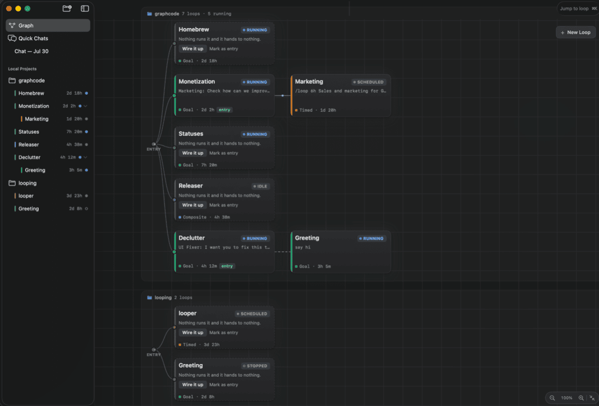

If you run your coding agents in Conductor, you have probably seen the news. Conductor is joining Meta, and its cloud stops accepting new messages on 13 November. The Mac app keeps working for a while longer, with only new models and critical bug fixes until early 2027, so you need a new home for your agents before long.
I'm Srinivasa Chaitanya, and I build GraphCode. It is a native Mac app for the same job Conductor does: running several coding agents in parallel on your own machine. I wrote this page for people deciding where to go next. What I say about Conductor comes from its own announcement and docs, linked at the bottom. What I say about GraphCode I checked against its code.
On 4 November 2026 Conductor announced that it is joining Meta.12 New sign-ups and app downloads stopped that day. Existing Pro users keep Pro features for free, and active subscribers are being refunded.
The cloud goes first. From 13 November, Conductor Cloud is read-only. In Conductor's words, "You can still read old chats and export data, but you can't send new messages." On 20 November it shuts down and Conductor begins deleting Cloud user data. The local app "will continue to receive new models and critical bug fixes until early 2027", and then starts winding down.1
So export before you do anything else. Conductor documents two ways to do it: right-click a cloud workspace and choose Transfer to local, or use Settings › Account › Export data.2 Your local branches and worktrees are plain git and stay exactly where they are.

Conductor organises work as workspaces, one per branch. GraphCode organises it as a graph. Each node is a loop: a real agent CLI running in a terminal, with a job and a rule for when it is finished. Edges connect loops, so one loop can hand its work to the next when it finishes, send it a message, or spawn a new loop.
You choose the agent per loop. GraphCode drives Claude Code, GitHub Copilot CLI, Codex, OpenCode and pi, using the CLIs you already have installed and signed in. It bundles none of them. A Codex loop can hand off to a Claude Code loop, and the edge between them does not care which agent is on either end.
Clicking a node opens that agent's actual terminal, rendered with Ghostty's engine. You are typing into the live session, the same interface you would get by running claude or codex yourself, so you can correct it halfway through a task. From a shell, graphcode node send types a message into any loop, and loops use the same command to steer each other.
Behind the app sits a small daemon, graphcoded, running under launchd. It keeps loops alive while the app is closed and fires an edge when a loop resolves. Each loop's terminal is a zmx session, so it survives quitting the app, and after a reboot each loop resumes its saved agent session instead of starting over. The graphcode CLI talks to the same daemon. That is how I script it, and how one loop creates another.
The app and daemon are licensed FSL-1.1-MIT, and each release becomes plain MIT two years after it ships. The CLI and GraphcodeKit are MIT from the start. GraphCode is free, with no paid tier.
Some things it does not do. It needs macOS 15 or later on Apple Silicon. There is no hosted cloud; to run agents on another machine, you add a remote project over SSH and steer it from your Mac. It is single-user, with nothing like Conductor's multiplayer. There is no Cursor backend and no setup scripts for new worktrees. It also has no screen for reviewing a branch's diff and does not open pull requests for you, so that part stays with the agent and your usual git tools.
Where GraphCode has no equivalent, the row says so.
| Conductor | What it is there | In GraphCode |
|---|---|---|
| Workspace | "An isolated copy of a project and repository for one task", one workspace to one branch, backed by a git worktree.34 | A loop: one node on the canvas, one live agent session. The worktree is optional. In the create form you pick none (it runs in the checkout), an existing worktree, or a new branch, which GraphCode creates and later offers to clean up. |
| Repository | The repository a workspace is cut from.3 | A project in the sidebar: a local folder, a clone from a URL, or a repository on a remote host over SSH. |
| Several agents in one workspace | Agents on the same branch in separate tabs.56 | Several loops in one project sharing a checkout or worktree, or extra tabs and splits inside one loop's terminal. |
| Agent picker | Claude Code, Codex, Cursor or OpenCode.6 | Chosen per loop: Claude Code, Copilot CLI, Codex, OpenCode or pi (--backend on the CLI). The CLI must already be on your PATH. No Cursor backend. |
| Chat panel and Big Terminal | A chat panel per agent session, plus a workspace terminal.6 | The agent's own terminal interface, live, with tabs and splits. graphcode node send types into any loop from a shell or from another loop. |
Codex goals (/goal) |
Keeps a local Codex session working across turns.6 | A goal-based loop, on any backend. It resolves when the goal is met, optionally decided by a shell check that exits 0, such as make test. |
| Plan Mode | An agent mode that plans before editing.6 | The agent's own modes stay available in its terminal. A turn-based loop also pauses for your review every turn, or only before it writes files. |
| Routines | Agents run on a schedule or from a GitHub Action, in the cloud.7 | A time-based loop, run on your Mac. The cadence lives in its prompt (/loop 1h …); for Codex, OpenCode and pi, switch on the experimental Daemon heartbeat in Settings. No GitHub Action trigger. |
Handoffs and .context notes |
A .context folder in the workspace for notes and handoffs.3 |
Edges between loops (hand-off, message, spawn), a memory log per loop that a relaunched session reads first, and the Mailroom, a board any loop in the graph can post to. Nothing is written inside your project folder. |
| Cloud workspaces | Workspaces in Vercel sandboxes that keep running with the app closed. Shutting down on 20 November.18 | The local daemon keeps loops running with the app closed. For another machine, add a remote project over SSH; its loops run there while your Mac steers them. No hosted cloud. |
| Multiplayer | Teammates prompting a shared cloud workspace together.8 | No equivalent. GraphCode is single-user. |
| Setup scripts, files to copy | Gitignored files copied into each new worktree, with setup scripts for the rest.4 | No equivalent. GraphCode creates the worktree; put your setup steps in the loop's prompt. |
From install to a running loop takes a few minutes. Your repositories, branches and worktrees work as they are.
brew install --cask scgopi/graphcode/graphcode, or drag it to Applications from the latest .dmg. You need at least one of claude, codex, copilot, opencode or pi on your PATH; the ones you used with Conductor carry over with their logins.The same loop from a shell, once the project is added:
$ graphcode node create ~/code/my-repo --title FixBuild --type goal \
--goal "the test suite passes" --predicate "make test" --backend codex
Then add a second loop, drag an edge from the first to it, and close the app. The daemon runs the first loop to its goal and hands off to the second without you.
Fetched on 7 November 2026. If Conductor's pages change, they win; open an issue on the GraphCode repo and I will correct this page. The full comparison covers Conductor alongside Vibe Kanban, Claude Squad, Superset, Emdash and Sculptor.
The GraphCode statements come from the README and the source: backends in CLISessionBackendKind.swift, loop types in LoopType.swift, edges in EdgeKind.swift, the per-loop worktree choice in ProjectFeatureState.swift, and the licence in LICENSE.